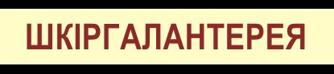

|
 |  |

Створюючи наш шкіргалантерейний додаток, ми мріяли створити ресурс, який буде орієнтований на ремонт та реалізацію якісної галантерейної продукції, для людей, що цінують стильні і надійні речі. Сподіваємося вас не залишить байдужими наш асортимент, а ціни на якісні аксесуари зможуть приємно здивувати.
Шкіряні товари, представлені в нашому ресурсі - це ті дрібниці, за якими можна судити не тільки про статус і достаток людини, а також про його стиль і внутрішній шарм. Ці дрібниці створюють образ людини, саме завдяки таким деталям створюється перше враження, яке часто грає вирішальну роль.
Існує гарна приказка «зустрічають по одягу, проводжають по розуму» і все-таки дуже важливо створити правильний імідж, дати співрозмовнику зрозуміти, що перед ним людина, яка гідна уваги, його варто вислухати, а може навіть і прислухатися.
В особі консультантів та спеціалістів з пошиву та ремонту нашого підприємства ви знайдете грамотних фахівців, які досконало орієнтуються в асортименті, особливостях дизайну і з легкістю підкажуть і проведуть консультацію. Для ремонту та виготовлення виробів зі шкіри ми використовуємо професійне швейне обладнання виробництва Японія і Китай (DDL-8700 Juki, Aurora GP-202 HM). Це дозволяє нашим майстрам працювати з будь-якими видами шкіри: шліфованої, тисненою, лакової, замшею, нубуком, напа, лайка і навіть екзотичними видами, на кшталт крокодилячої і страусиної. Причому не просто працювати, а працювати на високому якісному рівні.
НАШІ ФАХІВЦІ
швачка АААААААА швачка БББББББ швачка ВВВВВВВВ швачка ГГГГГГГГ

дизайнер АААААААА розкрійник БББББББ бригадир ВВВВВВВВ майстер ГГГГГГГГ
Нам приємно буде допомогти вам з вибором будь-якого товару з існуючого асортименту або проконсультують про пошив за індивідуальним дизайном: від маленької ключниці до великої дорожньої валізи.
Ми швидко реагуємо на замовлення, наша мета завоювати вашу довіру, стати дійсно тим ресурсом шкіргалантереї в Україні, де ви зручно і комфортно будете здійснювати замовлення.